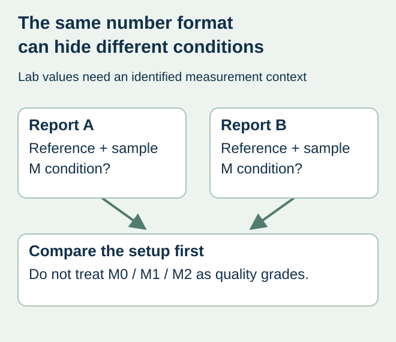
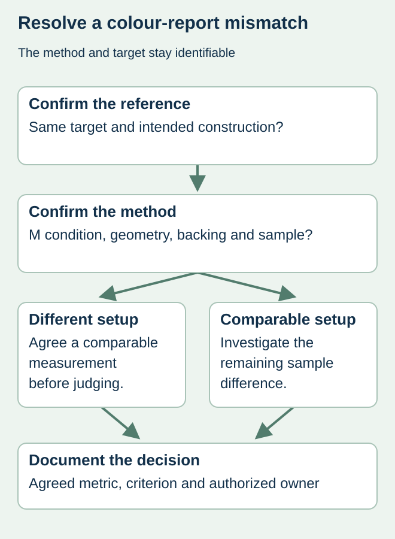

A printer and a buyer report different colour values for a label. Both reports may be genuine, yet the measurements may not describe the same comparison. Before rejecting the run or adjusting the ink, ask whether the instrument condition, reference and sample construction match.
Compare the measurement setup before comparing the acceptance result. M0, M1 and M2 are measurement conditions, not grades of printing quality. A report headed M1 does not by itself prove that a colour is correct or that another report is wrong.


Why the M condition belongs in the record
X-Rite’s measurement-condition documentation describes measurement conditions and the role of fluorescence, including optical brighteners. M1 addresses defined illumination conditions, while M2 excludes UV. These different treatments can matter when samples or colorants fluoresce. Use a qualified colour specialist to select the appropriate arrangement for the actual target and workflow; do not mix measurements simply because both are expressed as Lab values.
A measurement mode also differs from the light under which people visually inspect the pack. Record the agreed viewing arrangement separately. A phone photo under an unidentified lamp cannot reconstruct either measurement setup or a controlled physical comparison.
Request a comparable report pair
| Comparison field | What to obtain | What remains unresolved if absent |
|---|---|---|
| Reference | Identified target sample or measurement dataset | Which intended appearance is being compared? |
| Sample | Stock, print, finish and sample identity | Are the two reports measuring the same construction? |
| Instrument setup | Device, condition, geometry and aperture where applicable | Can these readings be interpreted together? |
| Presentation | Backing and sample preparation used | Did the measurement presentation differ? |
| Decision rule | Agreed metric, tolerance and review owner | What result actually authorizes acceptance? |
Ask the reporting party to state relevant settings rather than fill blank fields with a preferred standard name. A label on a bottle, a loose label on a backing and a proof on another medium should not silently become the same sample. Identify any condition the instrument or sample cannot support.


Investigate a disagreement before changing the target
Suppose a fictional food brand compares a new paper label with an approved proof. One measurement uses an unidentified mode, and the other uses M1. The first action is to establish a comparable, agreed measurement arrangement. It is premature to ask the printer to adjust the colour based solely on those two numbers.
If the samples still differ under a confirmed common arrangement, the parties can investigate the production or reference difference with meaningful evidence. If the construction changed, ask whether the old proof represents the new proposal. Do not describe an instrument-setting change as proof that a material substitution is acceptable.
Keep the acceptance and reference under control
Freeze the agreed target, measurement method and decision rule before using the results for contractual acceptance. No universal colour tolerance is supplied here. Different colours, surfaces and business requirements can need different agreed criteria, and the supplier must confirm the actual capability and evidence offered.
Store the measurement record with the artwork and job reference. Use the retained-reference guide to protect the physical target and control replacement of a worn working sample. On reorders, check that both the target and measurement arrangement still represent the intended construction.
Discuss the unresolved label requirement
Send the identified target, sample construction, colour-report fields and the disagreement to be resolved. Include instrument and measurement-condition details where available; omit confidential recipes. Prepare a label specification inquiry. The contact page opens an email draft and lists email or WhatsApp for attachments. Supply, proof options, testing, pricing and timing require project confirmation.